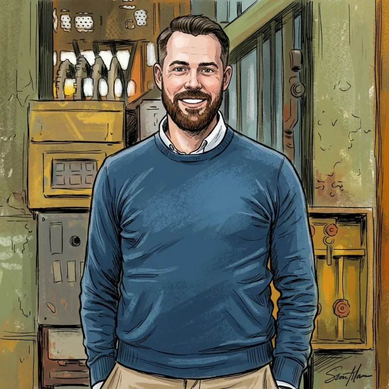

AI engineering
Making AI-assisted development predictable: agent harnesses with fixed phases and quality gates, MCP servers that give agents real context, and a tested toolkit of skills and agents.
What I'm building →Senior test automation consultant at deTesters
Over eleven years in test automation, mostly building the tools that make complex tasks simple. These days that means making AI-assisted development predictable, and teaching teams to write tests they can trust with Playwright.

What I do
Making AI-assisted development predictable: agent harnesses with fixed phases and quality gates, MCP servers that give agents real context, and a tested toolkit of skills and agents.
What I'm building →Self-service tooling that takes the friction out of environments and releases. Teams claim, reset and release more than 100 test environments themselves, and ship releases and hotfixes in one go.
Over eleven years of test strategy, frameworks and test data, from Selenium to Playwright. I teach it too, with hands-on Playwright trainings for UI and API testing.
Prepare for the training →Right now · BMW Financial Services
At BMW Financial Services, more than 25 feature teams build on one platform. Besides the platform tooling, I build what lets them use AI in their daily work. The hard part isn't getting an agent to do something; it's getting it to do the same right thing every time.
An AI harness that takes agents through fixed phases instead of letting them roam. Nothing moves on without proof that quality is in order, and it's agreed in advance which review findings block. A run behaves the same on a laptop as on a cloud agent.
MCP servers that connect agents to the platform and tools teams already use, so they act on real data through well-defined, controlled actions.
Reusable GitHub Copilot skills and specialised agents, shared through a skill marketplace, covering analysis and planning through to implementation, testing and review. Every new skill or agent is tested automatically in CI.
Want the short version? Agents, Skills & MCP Servers: a practical 101 →
On stage
Mostly at the bi-monthly test automation meetups of deTesters, TestCoders and TechChamps in the Werkspoorkathedraal in Utrecht.
Training
A full training with slides, exercises and the Booker platform as a practice app.